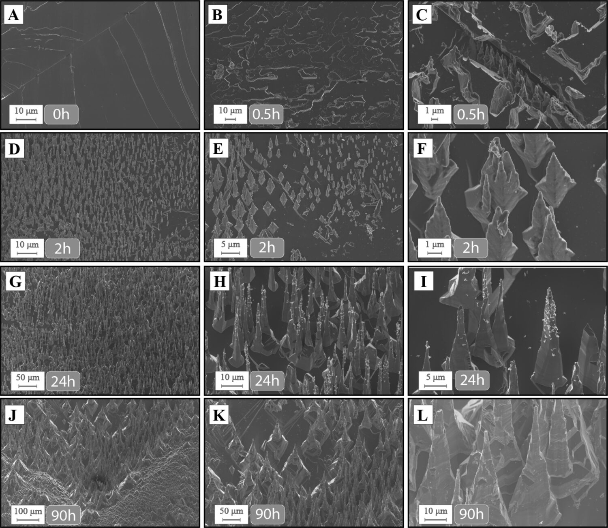
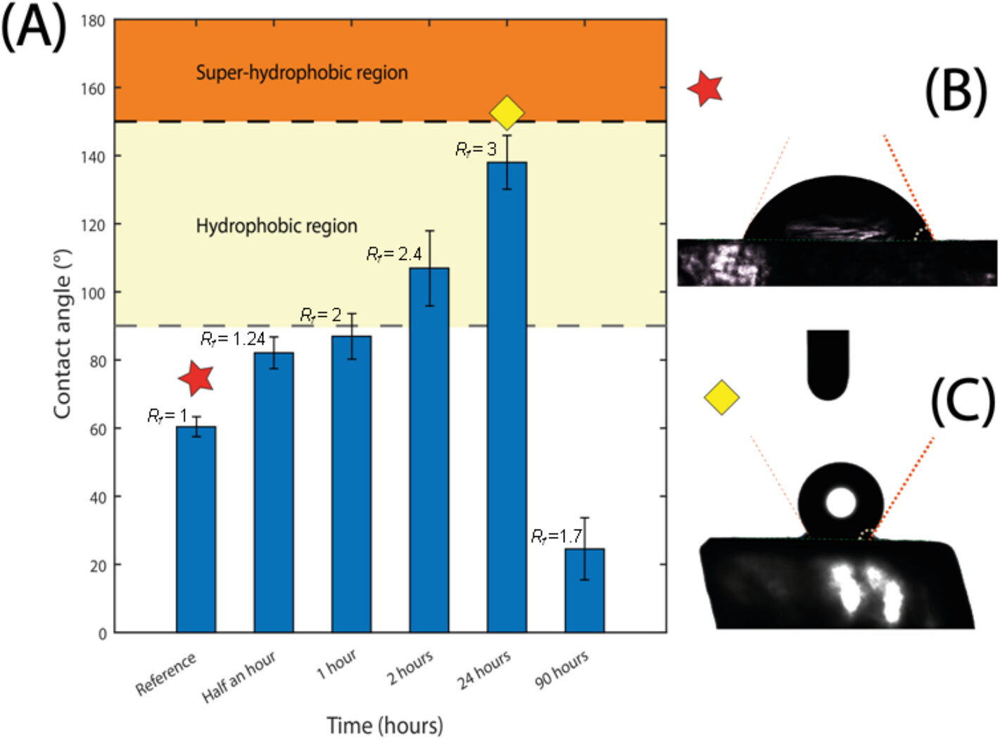
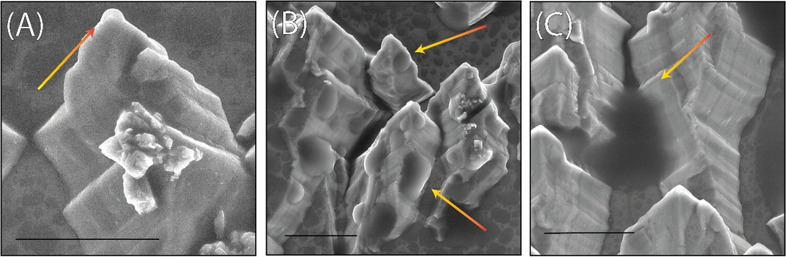
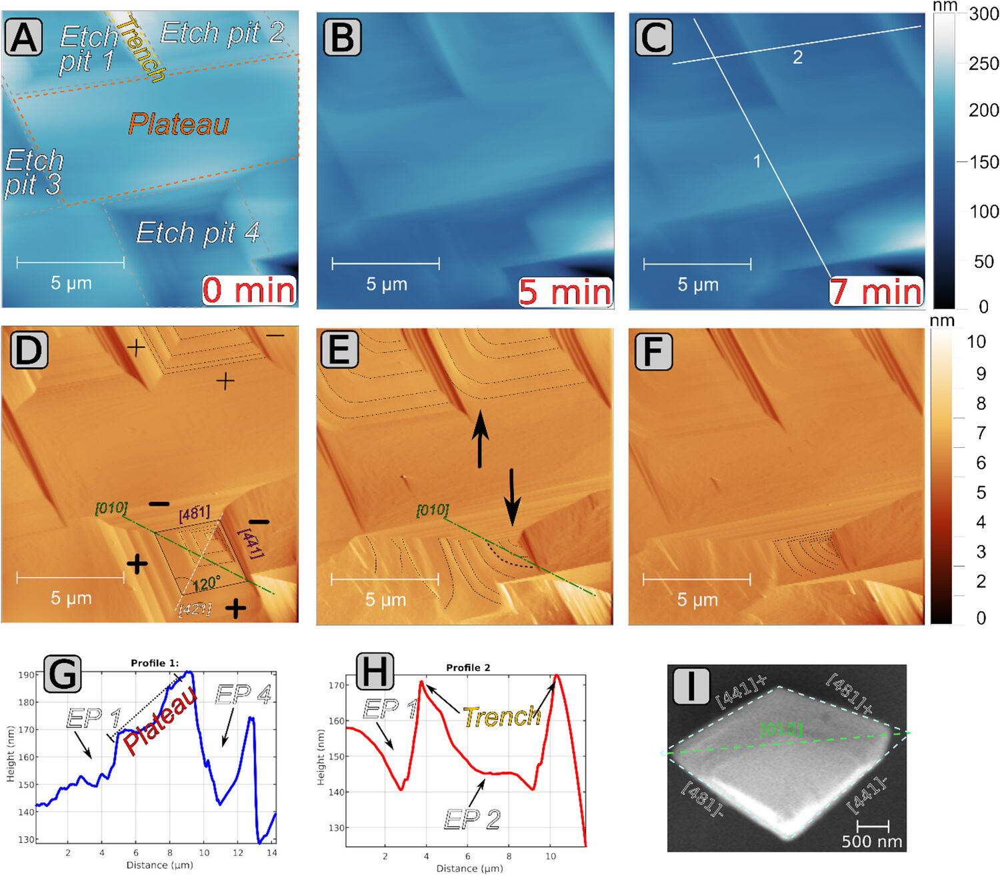
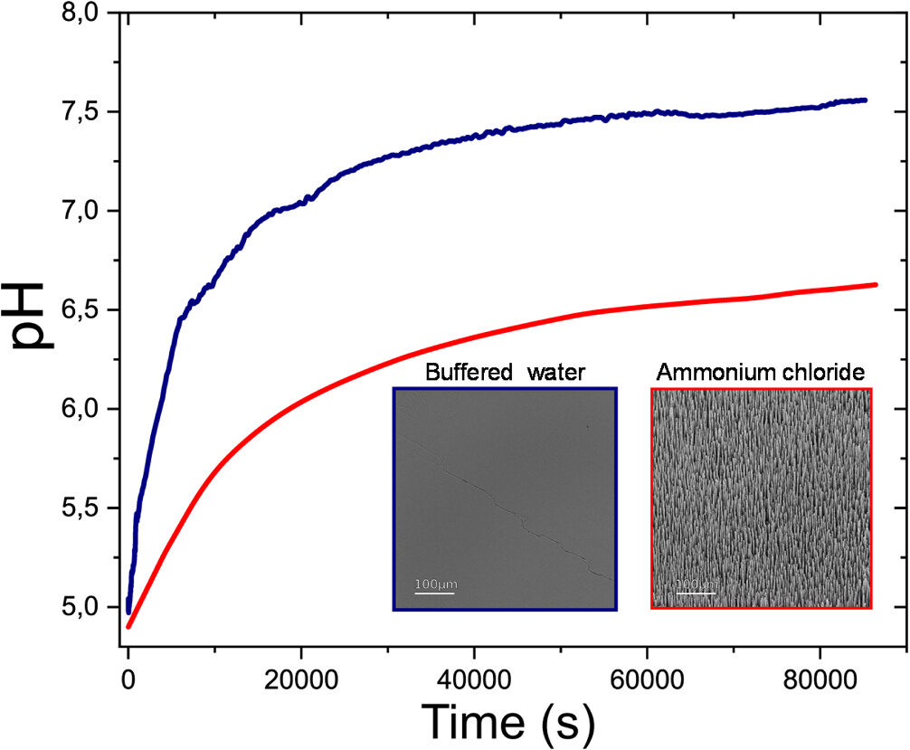
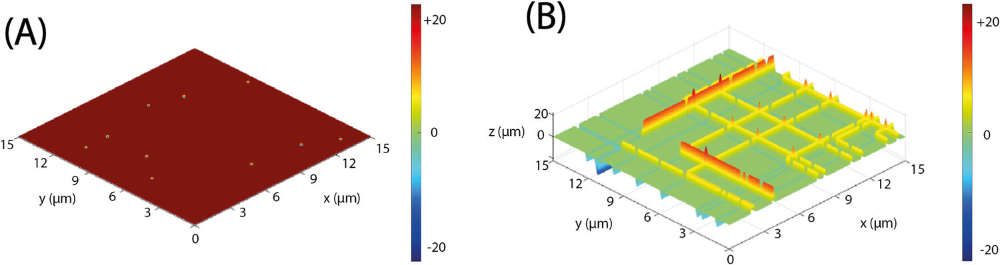
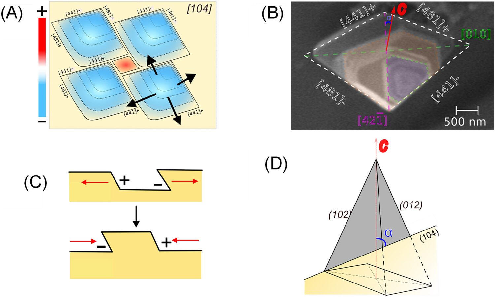

0 h · 60 ± 3°
A flat face
Freshly cleaved (104) calcite. Before any etching the surface is clearly hydrophilic: the drop spreads.
Materials & Design · 2025 · The heart of my PhD
Calcite's weakness is that water dissolves it. We used that weakness to protect it: a controlled etch carves a dense bed of microscopic pillars, and water that once spread over the crystal now beads up on the tips. No coating involved.
Drawn live in your browser: pits open on a calcite face, spread with steps retreating at v⁺/v⁻ = 2.8, and leave ridges and peaks where they merge. A qualitative sketch of the mechanism, in the spirit of Fig. 7.
Marble, limestone, lime mortars and plasters: a vast share of our sculptural and built heritage is made of calcite (CaCO₃). Water is involved in every kind of degradation these materials suffer, and acid pollutants make it worse, dissolving the surface and turning it into more soluble salts. The result is erosion, structural weakening and aesthetic damage.
The obvious defence is to stop water reaching the stone. The lotus leaf has shown how: microscopic roughness plus waxy nanostructures keep a droplet sitting on the tips of a "fakir bed", at contact angles above 150°, and it rolls away carrying the dirt. The hard part is getting that onto a statue.
Polyacrylates, alkyl-silanes, siloxanes, often with PFAS. They rarely exceed 120°, tend to form impervious films that block water vapour, can foster salt damage below the surface, and raise environmental and health concerns.
No polymer, and it can reach superhydrophobicity. But the stone discolours, heat decomposes the surface (CaCO₃ = CaO + CO₂), and large, irregular surfaces like statues are a real logistical problem.
Roughness made from the crystal, by dissolution. No coating on the surface, and it could reach complex shapes through a poultice loaded with the solution.
Geologists already know "spiky calcite" from tufa, travertine, speleothems and weathered marble. Could we produce those textures on purpose, in hours, and would water care?
Optical-quality Iceland spar from Chihuahua, Mexico, freshly cleaved to expose {104} faces. No polishing, to keep the steps and ripples real stone would have.
NH₄Cl solutions from 1 mM to 2 M, tested over time and temperature. Best pillars: 1 M, 24 h, 25 °C
The same test with NaCl, KCl, LiCl, NH₄Br, NH₄I and NH₄NO₃, at least three crystals per run
SEM and FESEM through time, in situ fluid-cell AFM at 10–15 mM, confocal microscopy
Static contact angles with 4 µL drops, and condensation cycles inside an environmental SEM
Batch dissolution with pH tracking, a MATLAB simulation of the pits, sandpaper abrasion and six days under water
Scroll to etch. The contact angles and roughness factors are the measured ones (Fig. 4), and the drop is drawn at the real angle. The SEM panels are cropped from Fig. 1 and all carry a 10 µm scale bar.
0 h · 60 ± 3°
Freshly cleaved (104) calcite. Before any etching the surface is clearly hydrophilic: the drop spreads.
0.5 h · about 82°
Etch pits have opened and merged, and incipient micropillars with micrometre-sized bases appear. The angle climbs, but the surface is still hydrophilic.
1 h · about 87°
Roughness has doubled. The drop sits just short of the 90° that separates a wetting surface from a repellent one. The SEM series in the paper has no 1 h panel, so the image stays on 0.5 h.
2 h · about 107°
Different areas of the crystal now show dense pillar coverage, and the surface enters the hydrophobic region. Nothing has been added to it: this is geometry.
24 h · 138 ± 8°
Dense arrays of pyramidal pillars, about 15–30 µm tall and 3–7 µm wide at the base, all leaning the same way: along the c-axis, at 45.5° to the surface. Water rests on the tips, over pockets of air. The Cassie-Baxter calculation predicts 148°.
90 h · about 25°
Keep etching and it all collapses. Over-etching removes part of the pillars and widens the base of the survivors, and the surface turns hydrophilic again. The treatment has an optimum, and it is a day long.

Read each row left to right to zoom in, and top to bottom to age. The base of the pillars starts rhombic, like the etch pits, then turns pseudo-triangular as the obtuse steps round off.
Look closely at I and L: the faces are not smooth but stepped. The steep {1̄02} faces that bound the pillars are only partly stabilised, so the more stable faces keep appearing as small steps.
A rough surface can repel water in two very different ways, or fail to. In a Wenzel state the drop soaks down between the pillars, wetting everything. In a Cassie-Baxter state it only touches the tips, with air trapped below, and a drop in that state rolls off easily. That is what self-cleaning needs.
With our measured geometry, the arithmetic is short enough to do here.
h = 25 µm · a = 4 µm · s = 10 µm · θ = 60° · φs = 0.101
Roughness amplifies whatever the flat surface does, so a hydrophilic face should become more hydrophilic.
Rf = 1 + 2ha / s² = 1 + (2 · 25 · 4) / 10² = 3
cos θW = Rf cos θ = 3 · 0.5 = 1.5
A cosine above 1 has no angle. No solution.
Only about a tenth of the projected area is solid under the drop. The prediction lands close to the 138 ± 8° we measured.
cos θCB = φs (cos θ + 1) − 1
= 0.101 · 1.5 − 1 = −0.85
θCB = 148°

These are the bars behind the clock above, and the two photographs are real drops: (B) on the flat crystal and (C) after 24 h, sitting up on the pillars.

Condense water vapour directly onto a pillar and it wets, with a contact angle of 66 ± 7°. The droplets slide down the edges and pool in the valleys, until the surface is fully wet: a Wenzel state.
This is not a contradiction. A condensing microdroplet is smaller than the gap between pillars, while a 2 mm raindrop-like drop rests on many of them. It does set a limit: the treatment should work against raindrops, but condensation could still be an issue.
Pillars on a crystal look like something that grew, and some researchers have read spiky calcite that way. Our data say otherwise. These pillars are bounded by high-energy {012} faces, which are more soluble than the stable {104} faces, so they should not grow under these conditions. Precipitation on drying does not explain why their number and size increase with reaction time. And under the AFM we see pits forming and merging, not pillars growing.
Dissolution alone is not enough either. Our simulation produces pillars from any pits that merge, whatever the solution, yet in the lab only ammonium makes them. Something has to stop the pits from eating the pillars they have just left behind.


Same starting pH, same crystal, same 24 h. In water the pH rises faster and further, because more calcite dissolves. In ammonium chloride dissolution is held back, and the insets show the outcome: a flat surface on one side, a forest on the other.
The two rates converge with time. That fits what we see at 90 h, when the pillars start to go.

A MATLAB model on a 15 × 15 µm surface, using the rates measured by AFM. After 24 h, ridges and peaks of about 20 µm stand where the pits meet: pillars when several (e.g. four) merge, trenches at the junction of two or three.
Tested at 1 M for 24 h (Fig. S3). Change the anion and the pillars stay; change the cation and they disappear. Na⁺, K⁺ and Li⁺ gave at most some surface roughening.

In practice, a poultice loaded with the ammonium salt solution could be laid on marble, limestone or lime-based mortar, removed after 24 h, and the surface cleaned with deionised water, also by poultice. It is simple, it follows complex geometries, and it leaves no coating behind. If the pillars eventually wear away, the treatment will need repeating.
Ahead lie the formation of pillars on more complex materials like stone, mortars and cement, and possible antibacterial properties. The goal is a durable surface treatment that makes polymer coatings unnecessary.
There is also a geological side. Understanding how saline solutions shape calcite helps read the same process in nature, in marine environments and in the crystals and rocks they touch.
Santoro De Vico, F., Elert, K., Ruiz-Agudo, E., Rodriguez-Navarro, C. (2025) Formation of micropillars on etched calcite and their biomimetic effect on wettability: Implications for built heritage protection. Materials & Design 255, 114214.
doi.org/10.1016/j.matdes.2025.114214 Video interview
Open access under CC BY-NC 4.0. The contact angles at 0.5, 1, 2 and 90 h in the clock are read from the bars of Fig. 4 and are approximate. Funded in part by the EU Marie Curie Actions ITN SUBLime (grant 955986). Full funding details are in the paper. Back to Publications